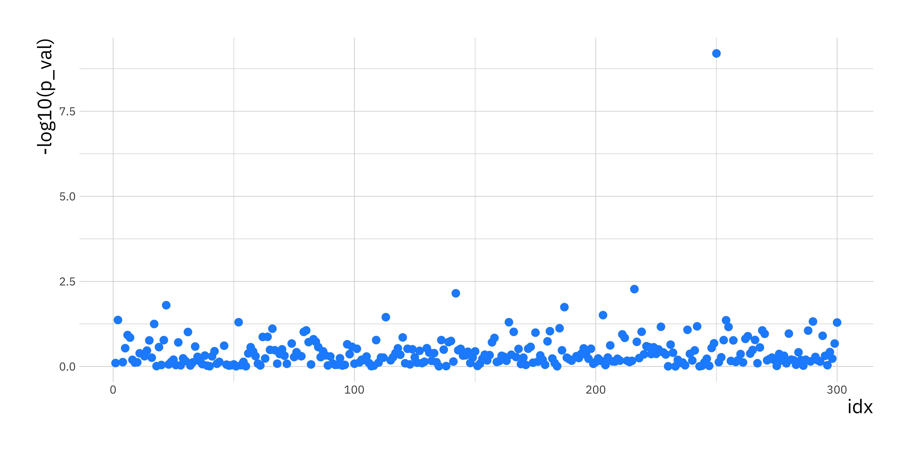
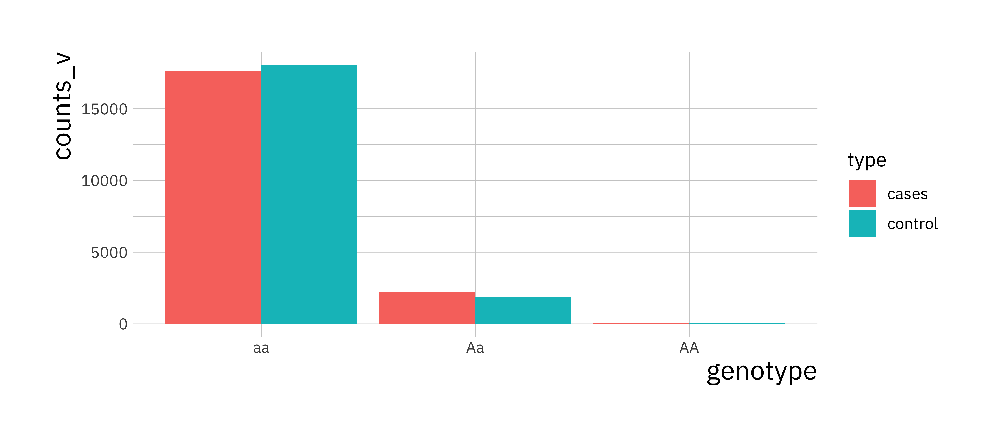
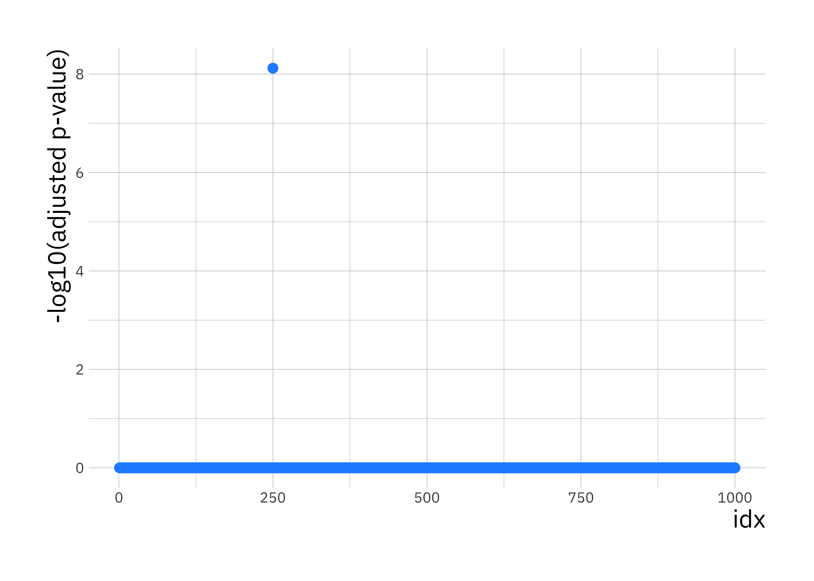
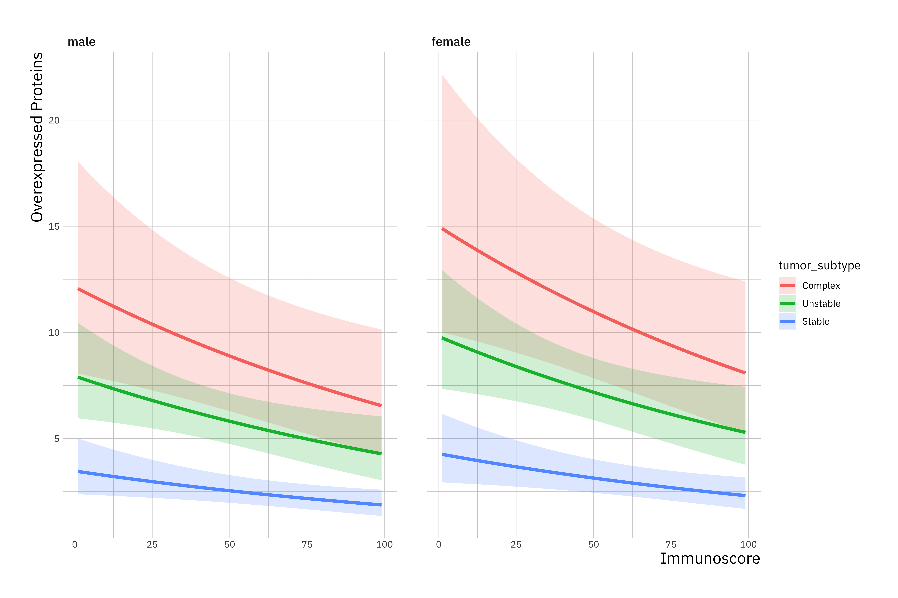

Chapter 5 Practical: Generalised linear models
In a genome-wide association study, we perform an experiment where we select \(n\) individuals with a disease (cases) and \(n\) individuals without the diseases (controls) and look for genetic differences between these two groups. In particular, we are interested in specific genetic variants (SNPs) that might induce some predisposition towards the disease.
Suppose I observe the following genotypes for a SNP in 4,000 individuals (2,000 cases, 2,000 controls):
- Genotypes:
AAAaaa - Controls:
3 209 1788 - Cases:
83 621 1296
The cases seem to have relatively more A alleles than the controls. This might make us suspect that having A alleles at this SNP is associated with the disease.
5.1 Detecting SNP associations
We have seen in lectures that we can do statistical tests for this type of contingency table using Chi Squared Tests. Let’s load example data set and and prepare
library(ggplot2) # for plots later
load("gwas-cc-ex1.Rdata")
# how many individuals are there
n <- length(y)
# How many SNPs do we have data for
p <- nrow(X)
# samples that are controls are encoded as 0 in y
control <- which(y == 0)
# disease cases are encoded as 1 in y
cases <- which(y == 1)Now we need to write a loop that scans through all, \(p\), SNPs:
# create a vector where p-values will be stored
p_vals <- rep(0, p)
# Loop over SNPs
for (i_p in 1:p) {
# 1. obtain genotype counts
counts <- matrix(0, nrow = 2, ncol = 3)
counts[1, ] <- c(sum(X[i_p, control] == 0),
sum(X[i_p, control] == 1),
sum(X[i_p, control] == 2))
counts[2, ] <- c(sum(X[i_p, cases] == 0),
sum(X[i_p, cases] == 1),
sum(X[i_p, cases] == 2))
# 2. expected probability of AA
# (assuming no dependence on case/control status)
expected_pr_AA <- sum(counts[, 1]) / n
# expected probability of Aa
expected_pr_Aa <- sum(counts[, 2]) / n
# expected probability of aa
expected_pr_aa <- sum(counts[, 3]) / n
expected_probs <- c(expected_pr_AA, expected_pr_Aa, expected_pr_aa )
# 3. do my chi-squared test
out <- chisq.test(counts, p = expected_probs)
# extract p value of test and store
p_vals[i_p] <- out$p.value
}We went through each SNP (rows in matrix X), extracted the counts of each genotype (marked 1. in code) for cases and controls, then we compute expected probability (marked 2. in code). Finally, we perform a chi-squared contingency table test comparing those observed counts to expected probabilities assuming that genotype is not related to disease status (marked 3. in code).
p_val_df <- data.frame(p_val = p_vals, idx = 1:p)
ggplot(p_val_df, aes(x = idx, y = -log10(p_val))) +
geom_point(size = 2.5, col = "dodgerblue1")
This plot is knows as a Manhattan plot. One SNP (i_p = 250) will pop out as being highly associated with the disease process. Look at the genotype counts (or MAF) for this SNP in the cases and controls to see for yourself that there is large difference in the distribution of genotypes (or MAF).
i_p <- 250
counts_v <- c(sum(X[i_p, control] == 0), sum(X[i_p, control] == 1),
sum(X[i_p, control] == 2), sum(X[i_p, cases] == 0),
sum(X[i_p, cases] == 1), sum(X[i_p, cases] == 2))
snp_procs <- data.frame(counts_v, type = rep(c("control", "cases"), each = 3),
genotype = rep(c("AA", "Aa", "aa"), 2))
ggplot(snp_procs, aes(x = genotype, y = counts_v, fill = type)) +
geom_bar(stat = "identity", position = "dodge")
5.2 GWAS and logistic regression
Now lets approach this problem using Generalised Linear Models. Lets load a data set containing genotypes in X and case-control status in y:
# load an example data set (genotypes in X, case-control (1/0) status in y)
load("gwas-cc-ex2.Rdata")
n <- length(y) # how many individuals do we have in total?
p <- nrow(X) # how many SNPs do I have data for?For each of the p SNPs we are going to call the R GLM function glm using the binomial family option with the logit link function because my outcomes are binary. We will then extract the p-value associated with the regression coefficient for the genotype. This is obtained from applying a hypothesis test (the Wald Test) on whether the coefficient has a null value zero.
p_vals <- rep(0, p)
for ( j in 1:p ) {
snp_data <- data.frame(y = y, x = X[j, ])
glm.fit <- glm(y ~ x, family = binomial(link = logit), data = snp_data )
p_vals[j] <- summary(glm.fit)$coefficients[2,4]
}We are testing 1,000 SNPs so lets use Bonferroni correction to adjust these p-values to take into account multiple testing:
Lets use the adjusted -log10 p-values to plot a Manhattan plot:
# create data.frame with p-values for plotting with ggplot
p_val_df <- data.frame(p_val = adj_p_vals, idx = 1:p)
ggplot(p_val_df, aes(x = idx, y = -log10(p_val))) +
geom_point(size = 2.5, col = "dodgerblue1") +
labs(y = "-log10(adjusted p-value)")
You should see a single SNP showing a strong association with disease status.
5.3 Negative binomial and Poisson regression
Molecular biologists study the behavior of protein expression in normal and cancerous tissues. The hypothesis is that the total number of over-expressed proteins depends on the histopathological-derived tumor subtype and an immune cell contexture measure.
You are provided with data on 314 tumours in the file nb_data.Rdata. The file contains one data frame with the following variables:
overexpressed_proteins: response variable of interest.immunoscore: gives a standardized measure of immune cell contexture.tumor_subtype: three-level nominal variable indicating the histopathological sub-type of the tumour. The three levels are Unstable, Stable, and Complex
Let’s load some prerequisite R libraries and the data to produce some summary statistics (install if required using install.package() command ):
# required libraries
library(MASS)
library(foreign)
load("nb_data.Rdata")
# print summary statistics to Console
summary(dat)## sample_id gender immunoscore overexpressed_proteins
## 1001 : 1 female:160 Min. : 1.00 Min. : 0.000
## 1002 : 1 male :154 1st Qu.:28.00 1st Qu.: 1.000
## 1003 : 1 Median :48.00 Median : 4.000
## 1004 : 1 Mean :48.27 Mean : 5.955
## 1005 : 1 3rd Qu.:70.00 3rd Qu.: 8.000
## 1006 : 1 Max. :99.00 Max. :35.000
## (Other):308
## tumor_subtype
## Complex : 40
## Unstable:167
## Stable :107
##
##
##
## 5.3.1 Count-based GLMs
The overexpressed_proteins measurements are counts. This implies we should use a Poisson based GLM.
In Poisson regression models, the conditional variance is by definition equal to the conditional mean. This can be limiting.
Negative binomial regression can be used for over-dispersed count data, that is when the conditional variance exceeds the conditional mean.
It can be considered as a generalization of Poisson regression since it has the same mean structure as Poisson regression but it has an extra parameter to model the over-dispersion. If the conditional distribution of the outcome variable is over-dispersed, the confidence intervals for the Poisson regression are likely to be narrower as compared to those from a Negative Binomial regression model.
In the following we will try both models to see which fits best.
5.3.2 Fitting a GLM
Below we use the glm.nb function from the MASS package to estimate a negative binomial regression. The use of the function is similar to that of lm for linear models but with the additional requirement of a link function. As count data is always positive, a log link function is useful here.
glm_1 <- glm.nb(overexpressed_proteins ~ immunoscore + tumor_subtype + gender, data = dat, link=log)
# print summary statistics of glm.nb output object to Console
summary(glm_1)##
## Call:
## glm.nb(formula = overexpressed_proteins ~ immunoscore + tumor_subtype +
## gender, data = dat, link = log, init.theta = 1.047288915)
##
## Deviance Residuals:
## Min 1Q Median 3Q Max
## -2.1567 -1.0761 -0.3810 0.2856 2.7235
##
## Coefficients:
## Estimate Std. Error z value Pr(>|z|)
## (Intercept) 2.707484 0.204275 13.254 < 2e-16 ***
## immunoscore -0.006236 0.002492 -2.502 0.0124 *
## tumor_subtypeUnstable -0.424540 0.181725 -2.336 0.0195 *
## tumor_subtypeStable -1.252615 0.199699 -6.273 3.55e-10 ***
## gendermale -0.211086 0.121989 -1.730 0.0836 .
## ---
## Signif. codes: 0 '***' 0.001 '**' 0.01 '*' 0.05 '.' 0.1 ' ' 1
##
## (Dispersion parameter for Negative Binomial(1.0473) family taken to be 1)
##
## Null deviance: 431.67 on 313 degrees of freedom
## Residual deviance: 358.87 on 309 degrees of freedom
## AIC: 1740.3
##
## Number of Fisher Scoring iterations: 1
##
##
## Theta: 1.047
## Std. Err.: 0.108
##
## 2 x log-likelihood: -1728.307R first displays the call and the deviance residuals. Next, we see the regression coefficients for each of the variables, along with standard errors, z-scores, and p-values. The variable immunoscore has a coefficient of -0.006, which is statistically significant at the 5% level (Pr(>|z|) = 0.0124*). This means that for each one-unit increase in immunoscore, the expected log count of the number of overexpressed_proteins decreases by 0.006.
The indicator variable shown as tumor_subtypeUnstable is the expected difference in log count between group Unstable and the reference group (tumor_subtype=Complex). The expected log count for the Unstable type is approximately 0.4 lower than the expected log count for the Complex type.
The indicator variable for Stable type is the expected difference in log count between the Stable type and the reference Complex group. The expected log count for Stable is approximately 1.2 lower than the expected log count for the Complex type.
5.3.3 Comparing nested models
To determine if tumor_subtype itself, overall, is statistically significant, we can compare a model with and without tumor_subtype. The reason it is important to fit separate models is that, unless we do, the overdispersion parameter is held constant and it would not be a fair comparison.
We use the anova function to compare models using a likelihood ratio test (LRT):
## Warning in anova.negbin(glm_1, glm_2, test = "LRT"): only Chi-squared LR
## tests are implemented## Likelihood ratio tests of Negative Binomial Models
##
## Response: overexpressed_proteins
## Model theta Resid. df 2 x log-lik.
## 1 immunoscore + gender 0.8705939 311 -1772.074
## 2 immunoscore + tumor_subtype + gender 1.0472889 309 -1728.307
## Test df LR stat. Pr(Chi)
## 1
## 2 1 vs 2 2 43.76737 3.133546e-10The two degree-of-freedom chi-square test indicates that tumor_subtype is a statistically significant predictor of overexpressed_proteins (Pr(Chi) = 3.133546e-10).
The anova function performs a form of LRT. It computes the likelihood of the data under the two models being compared and then uses the ration of these likelihood values as a test statistic.
Theory tells us that, for large samples sizes, the (2x) log likelihood ratio has a chi-squared distribution with degrees of freedom equal to the difference in the number of free parameters between the two models being compared. The LRT only applies to nested models, i.e. a pair of models where one is a less complex subset of the other.
5.4 Negative-Binomial vs Poisson GLMs
Negative binomial models assume the conditional means are not equal to the conditional variances. This inequality is captured by estimating a dispersion parameter (not shown in the output) that is held constant in a Poisson model. Thus, the Poisson model is actually nested in the negative binomial model. We can then use a likelihood ratio test to compare these two models.
To do this, we will first fit a GLM Poisson regression:
glm_3 <- glm(overexpressed_proteins ~ immunoscore + tumor_subtype + gender, family = "poisson", data = dat)Now, lets do our likelihood ratio test, we can extract the log-likelihood using logLik() and then use pchisq() to extract the probability of getting a statistic at least as extreme as this:
## 'log Lik.' 3.847622e-198 (df=6)Note that the more complex model goes first because more complex models always have the larger likelihood.
In this example the associated chi-squared value estimated from 2*(logLik(m1) – logLik(m3)) is around 900 with one degree of freedom. This strongly suggests the negative binomial model, estimating the dispersion parameter, is more appropriate than the Poisson model.
5.5 Further understanding the model (OPTIONAL)
For assistance in further understanding the model, we can look at predicted counts for various levels of our predictors. Below we create new datasets with values of immunoscore and tumor_subtype and then use the predict command to calculate the predicted number of overexpressed proteins
First, we can look at predicted counts for each value of tumor_subtype while holding immunoscore at its mean. To do this, we create a new dataset with the combinations of tumor_subtype and immunoscore for which we would like to find predicted values, then use the predict() command.
newdata_1 <-
data.frame(
immunoscore = mean(dat$immunoscore),
tumor_subtype = factor(c("Complex", "Unstable", "Stable"), labels = levels(dat$tumor_subtype)),
gender="male")
newdata_2 <-
data.frame(
immunoscore = mean(dat$immunoscore),
tumor_subtype = factor(c("Complex", "Unstable", "Stable"), labels = levels(dat$tumor_subtype)),
gender="female")
new_data <- rbind(newdata_1, newdata_2)
new_data$phat <- predict(glm_1, new_data, type = "response")
print(new_data)## immunoscore tumor_subtype gender phat
## 1 48.26752 Complex male 8.983829
## 2 48.26752 Stable male 2.567187
## 3 48.26752 Unstable male 5.876060
## 4 48.26752 Complex female 11.095193
## 5 48.26752 Stable female 3.170523
## 6 48.26752 Unstable female 7.257042newdata_3 <-
data.frame(
immunoscore = rep(seq(from = min(dat$immunoscore), to = max(dat$immunoscore), length.out = 100), 3),
tumor_subtype = rep(factor(c("Complex", "Unstable", "Stable"), labels = levels(dat$tumor_subtype)), each=100),
gender="male")
newdata_4 <-
data.frame(
immunoscore = rep(seq(from = min(dat$immunoscore), to = max(dat$immunoscore), length.out = 100), 3),
tumor_subtype = rep(factor(c("Complex", "Unstable", "Stable"), labels = levels(dat$tumor_subtype)), each=100),
gender="female")
new_data <- rbind(newdata_3, newdata_4)
new_data <- cbind(new_data, predict(glm_1, new_data, type = "link", se.fit=TRUE))
new_data <- within(new_data, {
overexpressed_proteins <- exp(fit)
LL <- exp(fit - 1.96 * se.fit)
UL <- exp(fit + 1.96 * se.fit)
})library(ggplot2)
ggplot(new_data, aes(immunoscore, overexpressed_proteins)) +
geom_ribbon(aes(ymin = LL, ymax = UL, fill = tumor_subtype), alpha = 0.2) +
geom_line(aes(colour = tumor_subtype), size = 1.5) +
labs(x = "Immunoscore",
y = "Overexpressed Proteins") +
facet_wrap(~ gender)